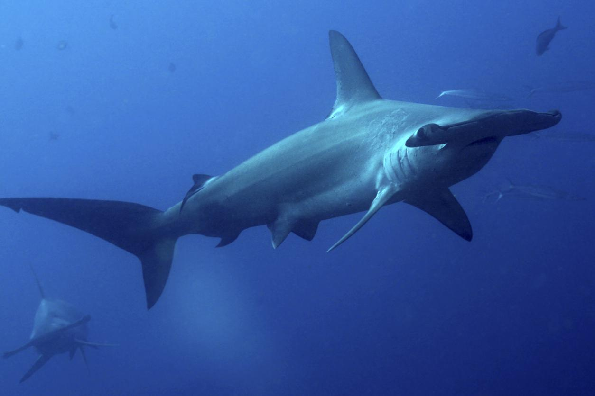

1. Tiburón martillo grande (Sphyrna lewini)
·Sobrepesca: Este tiburón es muy valorado en el mercado por su carne y sus aletas, lo que ha llevado a una disminución drástica en sus poblaciones.
·Captura incidental: A menudo queda atrapado en redes de pesca destinadas a otras especies, lo que contribuye a su declive.
·Destrucción de hábitat: La degradación de los ecosistemas costeros y los arrecifes, donde estos tiburones suelen vivir y reproducirse, afecta su supervivencia.
·Cambio climático: Las alteraciones en las temperaturas del océano y la acidificación afectan la disponibilidad de presas y su hábitat.
·Baja tasa de reproducción: Tienen un crecimiento lento y una reproducción limitada, lo que dificulta la recuperación de las poblaciones ya disminuidas.
